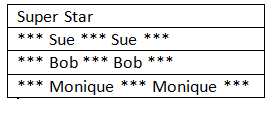
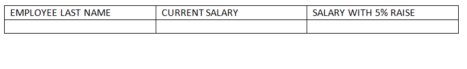

This lab will put into practice the SELECT statement using operators, comparisons, aliases and ORDER BY
The manager of Global Fast Foods would like to send out coupons for the upcoming sale. He wants to send one coupon to each household. Create the SELECT statement that returns the customer last name and a mailing address.
Each statement below has errors. Correct the errors and execute the query in Oracle Application Express.
Sue, Bob and Monique were the employees of the month. Using the f_staffs table, write a CREATE statement to display the results as shown below.

Which is the following is TRUE about the following query?
SELECT first_name, DISTINCT birthdate FROM f_staffs;Global FAst Foods has decided to give all staff members a 5% pay rise. Write the SELECT statement that presents the output as shown below:

The owners of DJs on Demand would like a report of all items in their D_CDs table with the following column headings: Inventory Item, CD Title, Music Producer, and Year Purchased. Write the SELECT statement to produce this report.
There are four coding errors in this statement. Can you identify them?
SELECT employee_id, last_name sal x 12 ANNUAL SALARY FROM employees;Click on the History tab at the lower part of the SQL Commands window. Scroll to find the SQL statment you used to generate the SuperStar output. Click on the SQL and it will load into the command window. Execute the command to ensure it is correct. Click on the SAVE button in the top right corner. Enter a name for the saved statement. If you log out of Oracle Express and log back in you can click on the saved SQL tab and load it for editing or running.
Using Global Fast Foods database, retrieve the customer's first name, last name and address for the customer who uses ID 456.
Show the name, start date, and end date for Global Fast Foods' promotional item "ballpen and highlighter" giveaway.
The following query was supposed to return the CD title "Carpe Diem" but no rows were returned. Correct the mistake in the statement and show the output.
SELECT producer, title
FROM d_cds
WHERE title='carpe diem';The manager of DJs on Demand would like a report of all the CD titles and years of CDs that were produced before 2000
Write a SQL statement that will list the titles and years of all the DJs on Demand's CDs that were not produced in 2000.
For the next three questions, create the following table :
TABLE NAME: students COLUMNS: studentno NUMBER(6) fname VARCHAR2(12) lname VARCHAR2(20) gender CHAR(1) major VARCHAR2(24)
Write a SQL statement that will display the student number of any student who has a PE major. Title the studentno output Student Number.
Write a SQL statement that will display the student number, first name and last name for all female students.
Write a SQL statement that will display all details for all male students.
Display the first name, last name and salary of all Global Fast Foods staff whose salary is between $5.00 and $10.00 per hour
Display the location type and comments for all DJs on Demand venues that are Private Homes.
Using only less than, equal, or greater than operators rewrite the following query:
SELECT first_name, last_name
FROM f_staffs
WHERE salary BETWEEN 20.00 and 60.00;Create a list of all DJs on Demand CD titles that have "a" as the second letter in the title.
Who are the partners of DJs on Demand who do not get an authorised expense amount?
Execute the two queries below. Why do these nearly identical statements produce two different results?
SELECT code, description
FROM d_themes
WHERE code > 200 AND description IN ('Tropical', 'Football', 'Carnival');
SELECT code, description
FROM d_themes
WHERE code > 200 OR description IN ('Tropical', 'Football','Carnival');Display the last names of all Global Fast Foods employees who have "d" and "i" in their last names.
Display the Global Fast Food employees that make more than $6.50 per hour and their position is not order taker.
In the example below, assign the employee_id column the alias of "Number." Complete the SQL statement to order the result set by the column alias.
SELECT employee_id, first_name, last_name
FROM employees;Create a query that will return all the DJs on Demand CD titles ordered by year with titles in alphabetical order by year.
Order the DJs on Demand songs by descending title. Use the alias "Our Collection" for the song title.